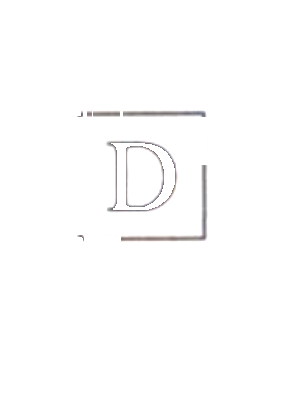
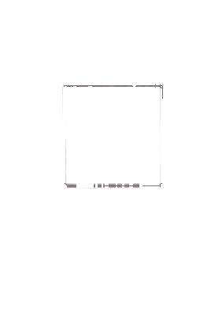
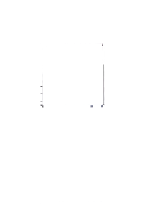
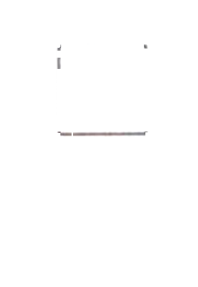
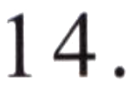
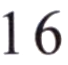

Nǐ hē shuǐ ma?例如： 你喝水吗？
Would you like some water?Хотите немного воды?桌子上有什么？
15.
她是谁？
你爸爸在哪儿工作？
第三部分Part IIIЧасть III
第17—18题： 选词填空。Questions 17-18: Choose the correct word to fill in each blank.Задания 17-18: Выберите правильное слово, чтобы заполнить каждый пропуск.
néngA 能
yǒuB 有
míngziC 名字
Nǐ jiào shénme例如： 你叫什么( C )?
What is your name?Как тебя зовут?17.
我的房间里( )一只小猫。
Wǒmen xiàwǔ zài shūdiàn jiàn ba.男： 我们下午在书店见吧。Hǎo de, wǒ ( ) dào.女： 好的， 我 7:00( )到。